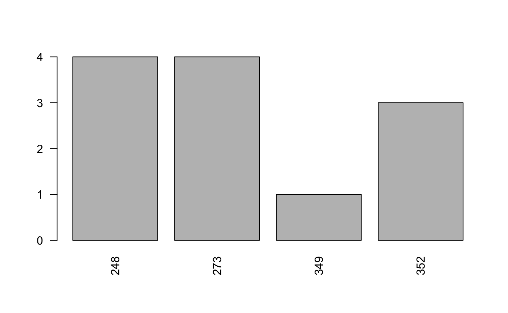

vignette.RmdThe purpose of the package polmineR is to offer a toolset for the interactive analysis of corpora using R. Apart from performance and usability, key considerations for developing the package are:
To provide a library with standard tasks such as concordances/keyword-in-context, cooccurrence statistics, feature extraction, or preparation of term-document-matrics.
To keep the original text accessible and to offer a seamless integration of qualitative and quantitative steps in corpus analysis that facilitates validation.
To make the creation and analysis of subcorpora (‘partitions’) as easy as possible. A particular strength of the package is to support research on synchronic and diachronic change of language use.
To offer performance for users with a standard infrastructure. The package is developed based on the idea of a three-tier software design. Corpus data are managed and indexed using the Corpus Workbench (CWB), which serves as a backend.
To support sharing consolidated and documented data, following the ideas of reproducible research.
The polmineR package supplements R packages that are already widely used for text mining. The CRAN NLP task view is a good place to learn about relevant packages. The polmineR package is intended to be an interface between the Corpus Workbench (CWB), an efficient system for storing and querying large corpora, and existing packages for text mining and text statistics.
Apart from the speed of text processing, the Corpus Query Processor (CQP) and the CQP syntax provide a powerful and widely used syntax to query corpora. This is not an unique idea. Using a combination of R and the CWB implies a software architecture you will also find in the TXM project, or with CQPweb. The polmineR package offers a library with the grammer of corpus analysis below a graphical user interface (GUI). It is a toolset to perform simple tasts efficiently as well as to implement complex workflows.
Advanced users will benefit from acquiring a good understanding of the Corpus Workbench. The Corpus Encoding Tutorial is an authoritative text for that. The vignette of the rcqp package, albeit archived, includes an excellent explanation of the CWB data-model. The inferface used now to use CWB/CQP functionality is the RcppCWB package.
A basic issue to understand is the difference between s- and p-attributes. The CWB distinguishes structural attributes (s-attributes) that will contain the metainformation that can be used to generate subcorpora/partitions, and positional attributes (p-attributes). Typically, the p-attributes will be ‘word’, ‘pos’ (for part-of-speech) and ‘lemma’ (for the lemmatized word form).
CRAN releases of polmineR can be installed with the usual call of install.packages().
Binaries are available for Windows, and everything should work out of the box. On macOS and Linux, system requirements need to be fulfilled. The annex of the vignette includes a detailed explanation how to install polmineR on macOS, and Linux.
The polmineR package is loaded just like any other package.
## polmineR v0.7.8.9006## session registry: /private/var/folders/r6/1k6mxnbj5077980k11xvr0q40000gn/T/RtmpU2pGAr/polmineR_registryUpon loading the package, the package version is reported. As polmineR is under active development, please check whether a more recent version is available at CRAN. Development versions are available at GitHub.
In addition, you will see an information on the session registry, which needs some further explanation.
Indexed corpus data may be stored at different locations on your machine. CWB users will usually have a data directory with subdirectories for every single corpus. But corpus data may also reside within R packages, or anywhere else.
It is not necessary to move indexed corpora to one single location. The only recommendation is to have them on a device that can be accessed sufficiently fast. Corpora are not fully loaded into memory, but information is retrieved from disk on a ‘on demand’-basis. Thus, storing corpus data on a SSD may be faster than a hard drive.
The CWB will look up information on the corpora in a directory called registry that is defined by the environment variable CORPUS_REGISTRY. Starting with version v0.7.9, the polmineR package creates a temporary registry directory in the temporary session directory. To get the path of the session registry directory, call registry(). The output is the session registry you have seen when loading polmineR.
## [1] "/private/var/folders/r6/1k6mxnbj5077980k11xvr0q40000gn/T/RtmpU2pGAr/polmineR_registry"The session registry directory combines the registry files describing the corpora polmineR knows about. Upon loading polmineR, the files in the registry directory defined by the environment variable CORPUS_REGISTRY are copied to the session registry directory. To see whether the environment variable CORPUS_REGISTRY is set, use the Sys.getenv()-function.
See the annex for an explanation how to set the CORPUS_REGISTRY environment variable for the current R session, or permanently.
If you want to use a corpus wrapped into a R data package, call use() with the name of the R package. The function will add the registry files describing the corpora in the package to the session registry directory introduced before.
In the followings examples, the REUTERS corpus included in the polmineR package will be used for demonstration purposes. It is a sample of Reuters articles that is included in the tm package (cp. http://www.daviddlewis.com/resources/testcollections/reuters21578/), and may already be known to some R users.
If you want to use corpora, you can download the EuroParl and the GermaParl data packages from a CRAN-like repository hosted by the PolMine Project.
install.packages("europarl.en", repo = "http://polmine.sowi.uni-due.de/packages")
install.packages("GermaParl", repo = "http://polmine.sowi.uni-due.de/packages")We some advantages to use R data packages for shipping corpora. Data packages with corpora have a version number which may be important for reproducing results, they can include a vignette documenting the data, and functions to perform specialized tasks.
The corpus()-method can be used to check which corpora are described in the registry and accessible. The REUTERS corpus in our case (note that the names of CWB corpora are always written upper case). In addition to the English REUTERS corpus, a small subset of the GermaParl corpus (“GERMAPARLMINI”) is included in the polmineR package.
## corpus size template
## 1 ARENEN 28842158 TRUE
## 2 AUSTROPARL 70308143 TRUE
## 3 BTPDF 139526576 TRUE
## 4 GERMAPARLMINI 222201 TRUE
## 5 KEYWORDS 44734138 TRUE
## 6 KEYWORDS_DE 7525003 TRUE
## 7 KEYWORDS_EN 36956586 TRUE
## 8 KEYWORDS_FR 18904184 TRUE
## 9 KEYWORDS_FR2 18904184 TRUE
## 10 NEXIS 164740428 TRUE
## 11 PLPRBT -11 TRUE
## 12 PLPRBTTXT 83405660 TRUE
## 13 PLPRTXT 83195275 TRUE
## 14 REPUBBLICA 26270819 TRUE
## 15 REUTERS 4050 TRUE
## 16 UNGA 43072609 TRUE
## 17 WPRGAGGR 8913223 TRUE
## 18 ZEIT 327839748 TRUEMany methods in the polmineR package use default settings that are set in the general options settings. Following a convention, settings relevant for the polmineR package simplystart with ‘polmineR.’ Inspect the settings as follows:
Several methods (such as kwic, or cooccurrences) will use these settings, if no explicit other value is provided. You can see this in the usage section of help pages (?kwic, for instance). To change settings, this is how.
Core analytical tasks are implemented as methods (S4 class system), i.e. the bevaviour of the methods changes depending on the object that is supplied. Almost all methods can be applied to corpora (indicated by a length-one character vector) as well as partitions (subcorpora). As a quick start, methods applied to corpora are explained first.
The kwic method applied to the name of a corpus will return a KWIC object. Output will be shown in the viewer pane of RStudio. You can include metadata from the corpus using the ‘meta’ parameter.
kwic("REUTERS", "oil")
kwic("REUTERS", "oil", meta = "places")
kwic("REUTERS", "oil", meta = c("id", "places"))You can also use the CQP query syntax for formulating queries. That way, you can find multi-word expressions, or match in a manner you may know from using regular expressions.
Explaining the CQP syntax goes beyon this vignette. Consult the CQP tutorial to learn more about the CQP syntax.
You can count one or several hits in a corpus.
## query count freq
## 1: Kuwait 15 0.003703704## query count freq
## 1: Kuwait 15 0.0037037037
## 2: USA 0 0.0000000000
## 3: Bahrain 1 0.0002469136## query count freq
## 1: "United" "States" 2 0.0004938272
## 2: "Saudi" "Arabia.*" 12 0.0029629630Use the dispersion()-method to get dispersions of counts accross one (or two) dimensions.
oil <- dispersion("REUTERS", query = "oil", sAttribute = "id", progress = FALSE)
saudi_arabia <- dispersion(
"REUTERS", query = '"Saudi" "Arabia.*"',
sAttribute = "id", cqp = TRUE, progress = FALSE
)Note that it is a data.table that is returned. You can proceed to a visualisation easily.

To analyse the neighborhood of a token, or the match for a CQP query, use cooccurrences().
oil <- cooccurrences("REUTERS", query = "oil")
sa <- cooccurrences("REUTERS", query = '"Saudi" "Arabia.*"', left = 10, right = 10)
top5 <- subset(oil, rank_ll <= 5)
as.data.frame(top5)## word count_partition count_window exp_window exp_partition ll
## 1 prices 47 48 28.06074 18.93926 51.53564
## 2 oil 78 30 46.56889 31.43111 26.38412
## 3 said 73 55 43.58370 29.41630 25.59149
## 4 industry 10 14 5.97037 4.02963 23.86295
## 5 is 25 24 14.92593 10.07407 22.79780
## rank_ll
## 1 1
## 2 2
## 3 3
## 4 4
## 5 5Working with partitions (i.e. subcorpora) based on s-attributes is an important feature of the ‘polmineR’ package. So if we want to work with the articles in the REUTERS corpus related to Kuaweit in 2006:
To get some basic information about the partition that has been set up, the ‘show’-method can be used. It is also called when you simply type the name of the partition object.
## ** partition object **
## corpus: REUTERS
## name:
## s-attributes: places = kuwait
## cpos: 3 pairs of corpus positions
## size: 660 tokens
## count: not availableTo evaluate s-attributes, regular expressions can be used.
saudi_arabia <- partition("REUTERS", places = "saudi-arabia", regex = TRUE)
s_attributes(saudi_arabia, "id")## [1] "242" "248" "273" "349" "352"If you work with a flat XML structure, the order of the provided s-attributes may be relevant for speeding up the set up of the partition. For a nested XML, it is important that with the order, you move from ancestors to childs. For further information, see the documentation of the partition-function.
The cooccurrences-method can be applied to partition-objects.
saudi_arabia <- partition("REUTERS", places = "saudi-arabia", regex = TRUE)
oil <- cooccurrences(saudi_arabia, "oil", p_attribute = "word", left = 10, right = 10)Note that is is possible to provide a query that uses the full CQP syntax. The statistical analysis of collocations to the query can be accessed as the slot “stat” of the context object. Alternatively, you can get the table with the statistics using ´as.data.frame´.
## word ll rank_ll
## 1 adhering 12.769590 1
## 2 prices 12.629860 2
## 3 by 9.353565 3
## 4 will 9.030516 4
## 5 GCC 7.851100 7To understand the occurance of a phenomenon, the distribution of query results across one or two dimensions will often be interesing. This is done via the ‘distribution’ function. The query may use the CQP syntax.
To identify the specific vocabulary of a corpus of interest, a statistical test based (chi square, or log likelihood) can be performed.
qatar <- partition("REUTERS", places = "saudi-arabia", regex = TRUE)
qatar <- enrich(qatar, p_attribute = "word")
qatar_features <- features(qatar, "REUTERS", included = TRUE)
y <- subset(qatar_features, rank_chisquare <= 10.83 & count_coi >= 5)
as.data.frame(y)[,c("word", "count_coi", "count_ref", "chisquare")]## word count_coi count_ref chisquare
## 1 Saudi 18 0 49.22244
## 2 Nazer 7 0 19.08998
## 3 accord 7 0 19.08998
## 4 market 14 6 19.03495
## 5 8 6 0 16.35879
## 6 Arabia 6 0 16.35879
## 7 sources 7 2 11.90069For many applications, term-document matrices are the point of departure. The tm class TermDocumentMatrix serves as an input to several R packages implementing advanced text mining techniques. Obtaining this input from a corpus imported to the CWB will usually involve setting up a partitionBundle and then applying a method to get the matrix.
## ... getting matrix with regions for s-attribute: id## ... generating the partitionsarticles_count <- count(articles, p_attribute = "word")
tdm <- as.TermDocumentMatrix(articles_count, col = "count", verbose = FALSE)
class(tdm) # to see what it is## [1] "TermDocumentMatrix" "simple_triplet_matrix"## <<TermDocumentMatrix (terms: 1192, documents: 20)>>
## Non-/sparse entries: 2409/21431
## Sparsity : 90%
## Maximal term length: 15
## Weighting : term frequency (tf)## Docs
## Terms 127 144 191 194 211 236 237 242 246 248 273 349 352 353 368 489
## oil 5 12 2 1 0 6 4 2 5 6 5 4 4 4 3 4
## barrel 2 0 1 1 0 3 0 0 0 2 2 0 1 0 0 1
## Docs
## Terms 502 543 704 708
## oil 5 2 3 1
## barrel 1 1 0 0The package includes many features that go beyond this vignette. It is a key aim in the project to develop respective documentation in the vignette and the man pages for the individual functions further. Feedback is very welcome!
The following instructions assume that you have installed R. If not, install it fromCRAN. An installation of RStudio is highly recommended.
Install polmineR and all dependencies the conventional way.
To install the most recent development version, hosted in a GitHub repository, use the convenient installation mechanism offered by the devtools package.
Finally, as a basic test whether the REUTERS corpus included in the polmineR package (for testing and demonstration purposes) is available, run:
The following instructions for Mac users assume that R is installed on your system. Binaries are available from the Homepage of the R Project. An installation of RStudio is highly recommended. Get the Open Source License version of RStudio Desktop.
To install polmineR on macOS, you first need to install RcppCWB.
First, you will need an installation of Xcode, which you can get it via the Mac App Store. You will also need the Command Line Tools for Xcode. It can be installed from a terminal with:
Please make sure that you agree to the license.
Second, an installation of XQuartz is required, it can be obtained from www.xquartz.org.
Third, to compile the C code in the RcppCWB package, there are system requirements that need to be fulfilled. Using a package manager makes things considerably easier. We recommend using ‘Homebrew’. To install Homebrew, follow the instructions on the Homebrew Homepage. The following commands then need to be executed from a terminal window. They will install the dependencies that the RcppCWB package relies on:
brew -v install pkg-config
brew -v install glib --universal
brew -v install pcre --universal
brew -v install readlineFourth, install RcppCWB.
Now everything is ready to install polmineR.
A quick check that polmineR is installed correctly is to load the library, and to check which corpora are available.
The development version of polmineR can be installed using devtools:
If you have not yet installed R on your Ubuntu machine, there is a good instruction at ubuntuuser. To install base R, enter in the terminal.
Make sure that you have installed the latest version of R. The following commands will add the R repository to the package sources and run an update. The second line assumes that you are using Ubuntu 16.04.
It is highly recommended to install RStudio. Output of polmineR methods is generally optimized to be displayed using RStudio facilities. If you are working on a remote server, running RStudio Server may be an interesting option to consider.
The Corpus Workbench will require the pcre, glib and pkg-config libraries. They can be installed as follows. In addition libxml2 is installed, a dependency of the R package xml2 that is used for manipulating html output.
sudo apt-get install libglib2.0-dev libssl-dev libcurl4-openssl-dev
sudo apt-get install libxml2-dev
sudo apt-get install libprotobuf-devThe system requirements will now be fulfilled. From R, install dependencies for rcqp/polmineR first, and then rcqp and polmineR.
Use devtools to install the development version of polmineR from GitHub.
Finally, check the installation.
The environment variable “CORPUS_REGISTRY” can be set as follows in R:
To set the environment variable CORPUS_REGISTRY permanently, see the instructions R offer how to find the file ‘.Renviron’ or ‘.Renviron.site’ when calling the help for the startup process(?Startup).